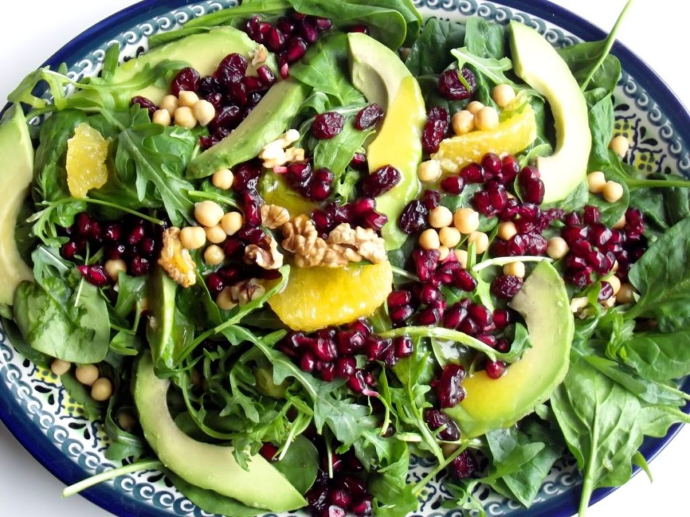

Салат з авокадо та апельсином

Інгредієнти:
- свіжий шпинат – 150 г
- рукола – 100 г
- апельсин – 1 шт.
- авокадо – 1 шт.
- оливкова олія – 2 ст. л.
- кунжутна олія – ¼ ч. л.
- сіль – за смаком
- чорний мелений перець – за смаком
- гранат – половина
- улюблені горіхи – за смаком
Рецепт приготування:
- Апельсин очистити від шкірки, нарізати великими шматочками.
- Авокадо нарізати тонкими скибочками. Почистити гранат.
- Викласти листя салату і шпинат в тарілку.
- Потім викласти авокадо й апельсин.
- Поперчити та посолити за смаком. Додати зерна граната.
- Полити кунжутною та оливковою олією.
- Додати зверху подрібнені горіхи.